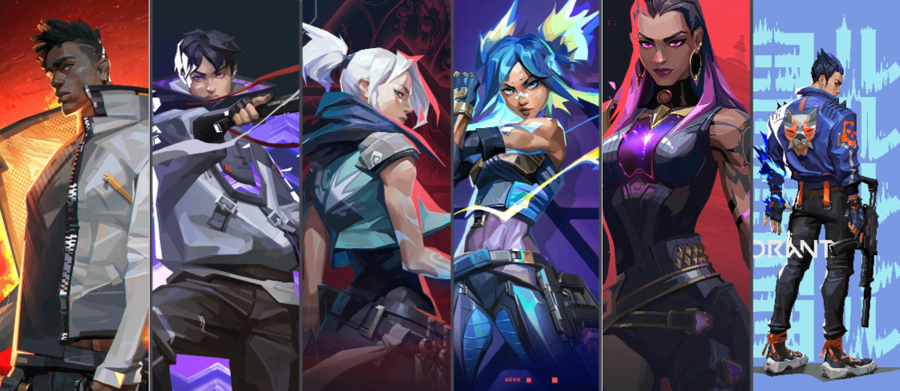

VALORANT
um jogo de FPS tático 5x5 da grandiosa Riot Games lançado em Junho de 2020, o game desde a sua versão Beta fechado foi muito bem recebido pela comunidade gamer do mundo inteiro, tanto por sua jogabilidade, gráficos e mecânicas únicas e tão marcantes, algo totalmente diferente do que estávamos acostumados de jogos da mesma categoria. A principal diferença do game em relação a outros do gênero é a história. Com uma lore bastante rica, que nos apresenta uma enredo interessante, cheia de personagens complexos, conspirações e reviravoltas.
PROJETO A
Assim foi nomeado o jogo que uma pequena equipe da Riot Games estava desenvolvendo no ano de 2013. os jogos de fps tático com foco competitivo foi o que deu embasamento para o início do projeto. O game foi anunciado como "Project A" em 15 de outubro de 2019, durante um evento de dez anos de aniversário do League of Legends, em um vídeo de anúncio, a produtora executiva Anna "SuperCakes" Donlon, descreve o jogo como "shooter tático baseado em personagens", competitivo e que foca em mecânicas precisas, e também conta que o jogo se passa em um belo futuro próximo da Terra e contará com um elenco letal de personagens, cada um com suas habilidades únicas. Complementa ainda, que estão veemente focados nos problemas que realmente importam; como problemas de latência nos servidores, pings altos e como acabar com o peeker's advantage. E para finalizar, demonstram sua preocupação com relação aos famosos cheaters: "Desde o início, o sistema anti-cheat foi uma prioridade e faremos de tudo para preservar a integridade das partidas."
Confira o anúncio oficial do FPS tático da Riot Games.
HISTÓRIA DE VALORANT
Em 2039, ocorre um fenômeno global chamado Primeira Luz. Anéis de luz surgem em vários pontos do mundo, trazendo consigo um elemento desconhecido: a radianita. Extremamente poderosa, essa substância logo se torna crucial para a humanidade. Após o evento, algumas pessoas expostas à radianita passam por mutações, adquirindo poderes e tornando-se conhecidas como radiantes. Enquanto algumas habilidades são simples, outras são extraordinárias, permitindo façanhas como a imortalidade, viagens interdimensionais e até ressuscitar pessoas.
No entanto, nem todos os radiantes escolhem usar seus poderes para o bem da humanidade. Em resposta, surge o Protocolo Valorant, fundado por um grupo enigmático e apoiado pela corporação Kingdom. Este protocolo visa manter os radiantes sob vigilância e proteger o planeta de indivíduos com habilidades especiais que possam se tornar uma ameaça.
Além dos radiantes, o protocolo inclui agentes "comuns", pessoas sem poderes adquiridos na Primeira Luz. Esses agentes recebem treinamento para operar armas e equipamentos criados pela Kingdom usando a radianita, possibilitando-lhes enfrentar os radiantes de igual para igual.
AGENTES e ROLES
O game conta com quatro classes de agentes;
- Iniciadores
- Duelistas
- Controladores
- Sentinelas
Iniciadores são fundamentais em uma equipe de Valorant, desempenhando um papel crucial na coleta de informações e no suporte estratégico durante as partidas. Eles têm a responsabilidade de revelar a localização de inimigos e desestabilizar suas posições, fornecendo ao time uma compreensão clara do mapa e do movimento adversário.
No lado atacante, os iniciadores são especialmente importantes, pois auxiliam os duelistas na abertura de rotas e no avanço em direção aos pontos de controle. Utilizando habilidades como flashes, spots e drones, eles criam oportunidades para que seus companheiros de equipe executem jogadas agressivas e surpreendam os inimigos.
Um iniciador bem-sucedido não apenas abre o caminho para seus aliados, mas também planta a dúvida e a confusão no time adversário. Com habilidades que podem desorientar, marcar ou até mesmo imobilizar oponentes. Eles devem ser estratégicos e oportunistas, sabendo exatamente quando e onde utilizar suas habilidades para maximizar seu impacto.Duelistas são os agentes ofensivos, com o objetivo de enfrentar os inimigos de frente e abrir caminho para o avanço do time. Conhecidos por suas habilidades de combate e agressividade, eles são os primeiros a entrar em confronto, buscando abates e criando espaço para que seus companheiros possam seguir com a estratégia planejada.
Os duelistas são especialmente eficazes na eliminação rápida de oponentes, graças a suas habilidades que aumentam a mobilidade, dano e capacidade de sobrevivência. Com recursos como dashes, flashes e curas, eles conseguem se movimentar rapidamente pelo mapa, surpreendendo inimigos e criando oportunidades de vantagem numérica.
No lado atacante, os duelistas são essenciais para quebrar as linhas defensivas inimigas. Eles lideram o avanço em direção aos sites, utilizando suas habilidades para desorientar defensores e ganhar controle do espaço. No lado defensor, eles buscam tomar iniciativa, muitas vezes buscando confrontos agressivos para garantir abates iniciais que podem mudar o curso da rodada.
Com um estilo de jogo focado na iniciativa e na ação, os duelistas são essenciais para qualquer equipe que busca dominar o campo de batalha e impor seu ritmo ao longo da partida. Sua presença intimida e pressiona o time adversário, fazendo deles peças chave para alcançar a vitória.
Os controladores são os mestres em controle e domínio de espaço de mapa, equipados com smokes, paredes e zonas de negação. Eles tem o objetivo de negar informação ao time inimigo, diminuir suas possibilidades durante o round e definir o ritmo da rodada.
Sua função principal é dividir o mapa, bloquear linhas de visão inimiga e criar um espaço favorável para sua equipe. Com isso, são capazes de impedir rotações e isolar áreas estratégicas do mapa. Isso permite que sua equipe possa realizar avanços ou defensivas de forma segura e calculada. No lado atacante, eles ajudam a preparar o terreno para tomadas de sites, enquanto no lado defensor, eles podem atrasar o avanço inimigo e controlar pontos críticos.
A escolha de um controlador deve considerar o estilo de jogo da equipe, o mapa e a composição dos agentes adversários. Um bom controlador é a chave para jogadas bem executadas, garantindo que seu time tenha as melhores condições possíveis para alcançar seus objetivos.
Os famosos sentinelas são os defensores da equipe, desempenhando um papel fundamental na proteção de zonas e contenção do rush inimigo.
São essenciais para segurar áreas específicas do mapa, utilizando suas habilidades para detectar, atrasar e desorientar inimigos. Com habilidades que incluem armadilhas, torres e zonas de desaceleração, os sentinelas têm a capacidade de monitorar áreas críticas e fornecer informações valiosas sobre o movimento do inimigo.
No lado defensor, os sentinelas são posicionados em locais estratégicos para maior eficácia de suas habilidades, cobrindo múltiplas rotas de entrada e criando barreiras eficazes contra os adversários. Eles desempenham um papel crucial em atrasar e fragmentar as investidas inimigas, garantindo que sua equipe tenha tempo para reagir e se reposicionar. Além de suas capacidades defensivas, os sentinelas são igualmente importantes no lado atacante, protegendo flancos e garantindo que áreas conquistadas permaneçam seguras.